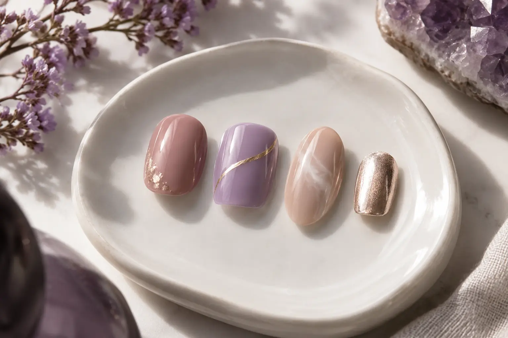

Nagų dizaino gidas: forma, spalva, technika ir darbo apimtis
Autorius: Madbeauty redakcija · Numatyta 2026 m. spalio 14 d. 16:00 (Lietuvos laiku)
Suplanuokite nagų dizainą atskirdami pagrindą, formą, spalvą ir dekoravimo apimtį. Iliustracinis pavyzdys padeda aiškiau aprašyti norimą rezultatą.

Nagų dizainas – vizualinis sumanymas, o ne atskiras dangos tipas. Norimą vaizdą aiškiau suplanuosite atskirai nusprendę dėl pagrindo, formos, spalvos ir dekoravimo apimties. Konkretus metodas, darbai, kaina ir trukmė priklauso nuo pasirinkto pasiūlymo.
Dizainas ir dangos tipas – skirtingi pasirinkimai
Danga nusako vieną paslaugos dalį, o dizainas – kaip norite, kad nagai atrodytų. Pavyzdžiui, tas pats spalvos ar akcento sumanymas gali būti svarstomas su skirtingais pagrindais, tačiau pasiūlymo apimtis gali skirtis. Todėl pavadinimą „gelinis lakavimas“ verta atskirti nuo pačios dizaino užduoties.
Keturi sprendimai prieš patvirtinant dizainą
- 1. Pagrindas ir paskirtis. Įvardykite, kokios paslaugos ar dangos ieškote ir kokiam kasdieniam poreikiui ruošiate nagus. Tai apibrėžia, ką toliau lyginate.
- 2. Forma ir ilgis. Aprašykite pageidaujamą siluetą bei ilgį. Jei nagai trumpi arba jau turi konkrečią formą, įtraukite tai į užduotį – nespręskite, kad pavyzdžio vaizdas bus tiesiogiai pakartojamas.
- 3. Spalva ir paviršius. Pasirinkite pagrindinę spalvų kryptį, kontrasto lygį ir pageidaujamą paviršiaus įspūdį. Ekrane matomas atspalvis gali skirtis nuo realaus, todėl nuotrauką laikykite nuotaikos, o ne tikslios spalvos pavyzdžiu.
- 4. Motyvas ir darbų apimtis. Nurodykite, ar norite vieno akcento, pasikartojančio motyvo, ar kelių skirtingų detalių. Užrašykite, ant kurių nagų ir kokiu mastu jų pageidaujate; tikslų darbų sąrašą ir kainą tikrinkite konkrečiame pasiūlyme.
Ši keturių dalių schema padeda palyginti du sumanymus nekeičiant visko iš karto: palikite tą patį pagrindą ir formą, o palyginkite spalvą arba akcento vietą. Taip lengviau nuspręsti, kas iš tikrųjų kuria norimą vaizdą.
Pavyzdys: gelinė danga su vienu akcentu
Iliustracinė situacija, ne tikro kliento darbas: įsivaizduokite pasirinktą gelinę dangą ir vieną žvaigždės motyvą kaip akcentą. Užduotyje atskirai įrašykite pagrindinę spalvą, pageidaujamą formą, akcento vietą ir kiek nagų jis turėtų apimti. Jei dizainą norite pritaikyti progai, pirmiausia pakeiskite vieną elementą – pavyzdžiui, spalvų kryptį arba akcento motyvą – ir įvertinkite, ar darbo apimtis vis dar atitinka jūsų norą.
„Nagų dailė“ neapibrėžia viso paslaugos paketo
„Nagų dailė“ yra pasirinkimo kategorija, bet vien jos pavadinimas nepasako, koks metodas, produktas ar dekoravimo darbai įeina į konkretų pasiūlymą. Palyginkite, koks pagrindas pasirenkamas, kokios detalės įtrauktos ir kaip apskaičiuojami papildomi darbai. Jei pateikiate pavyzdžio nuotrauką, pažymėkite, kurios jos dalys svarbiausios ir ką norėtumėte keisti.
Trumpa dizaino užduotis
- Pagrindas: kokios paslaugos ar dangos ieškau.
- Forma ir ilgis: ko pageidauju ir kas jau pasirinkta.
- Spalva: pagrindinė kryptis ir norimas kontrastas.
- Akcentas: motyvas, vieta ir nagų skaičius; jei tinka – „be akcento“.
- Ribos: ko nenoriu kopijuoti iš pavyzdžio ir ką būtina suderinti su konkrečiu pasiūlymu.
Jei pirmiausia norite išsirinkti atspalvį, tęskite gidu „Kaip pasirinkti nagų spalvą“. O prieš remdamiesi darbų nuotraukomis, skaitykite kaip vertinti meistro darbų galeriją.
Madbeauty kataloge galite atverti nacionalinį pasirinkimą „Nagų dailė“ ir aiškiai pasirinkti miestą. Katalogo pasirinkimas nepatvirtina, kad jame yra konkretus teikėjas, laikas ar laisva registracija.